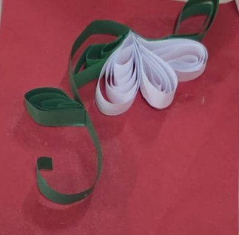
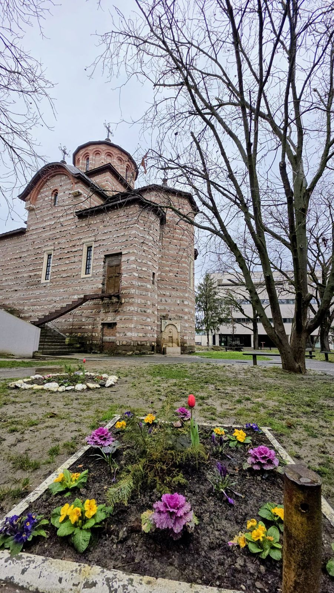
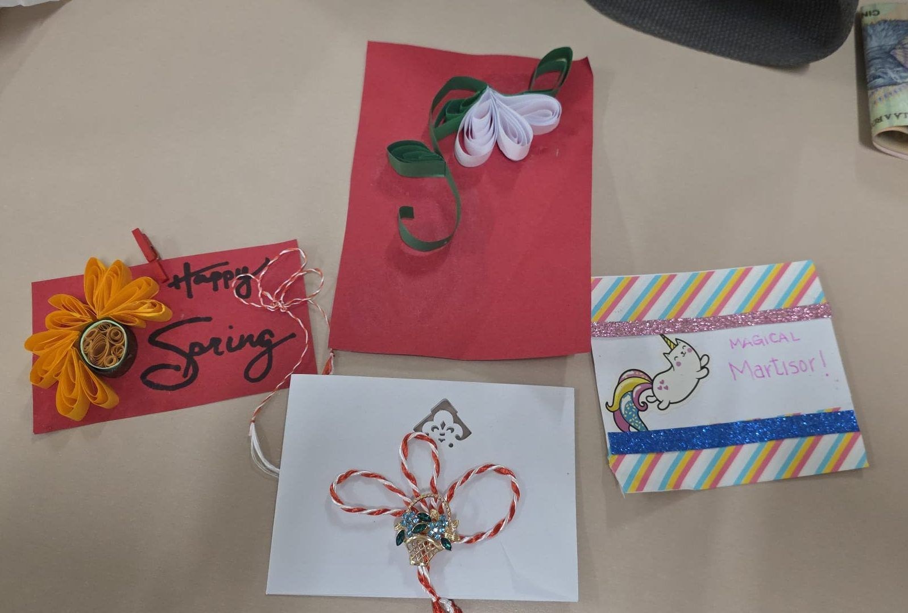

Journey 01 · Timișoara Note 9 of 11 Field Note
Mărțișor
The First Signs of Spring

The first time I noticed the red and white threads, I was lingering over a coffee in the main promenade of Timisoara.

A series of small street stalls had appeared almost overnight, each covered in rows of tiny charms tied with twisted strings. There were flowers, hearts, animals, little metal symbols, each one hanging from a red and white cord.
While I was sitting nearby with a coffee, an older couple stopped at one of the stalls near me.
The man studied the display for a moment before choosing one of the small charms. He turned toward the woman beside him and carefully pinned it to the front of her coat.
She smiled and leaned over to kiss him on the cheek. Then they walked away together.
Over the next few days I began noticing those same red and white threads everywhere. On coats, backpacks, sweaters, and bags. Small charms tied with twisted string appeared all over the city.
Eventually I learned that I had arrived in Romania just in time for Mărțișor.
On March 1st, people give small charms tied with red and white thread to friends, family members, and colleagues. The colors traditionally represent the transition from winter to spring, the tension between the cold season that is ending and the new life beginning to appear. People wear the charms for the first days of March, sometimes longer, until the real signs of spring begin to show.

Markets fill with stalls selling the tiny ornaments. Schools, workplaces, and families exchange them casually. Suddenly the entire city seems dotted with small flashes of red and white. Like many traditions, Mărțișor exists somewhere between folklore and everyday life. No one announces it formally. It simply appears one day and is gone the next – not unlike the March weather itself.
What I remember most about it, though, isn’t the folklore explanation or the shopping. It’s that moment in the square.
An older man taking his time choosing a charm. Pinning it carefully to his partner’s coat. A quick kiss on the cheek before they continued on their walk.
A small gesture, marking the arrival of spring.
Originally published at fieldnotesfromabroad.com/2026/03/14/field-notes-martisor/